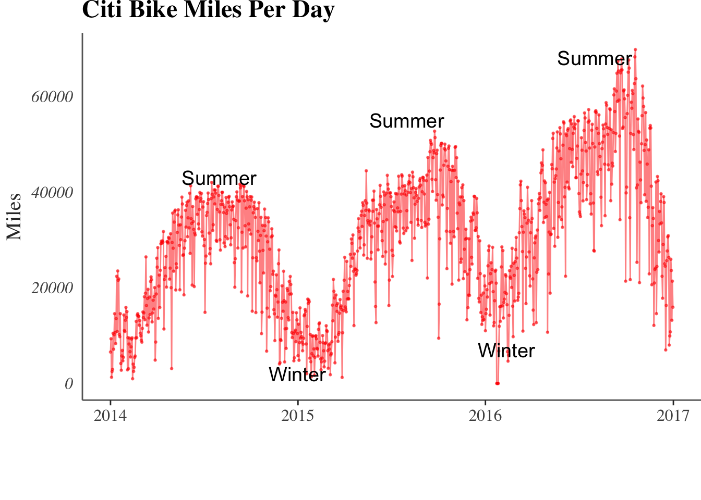
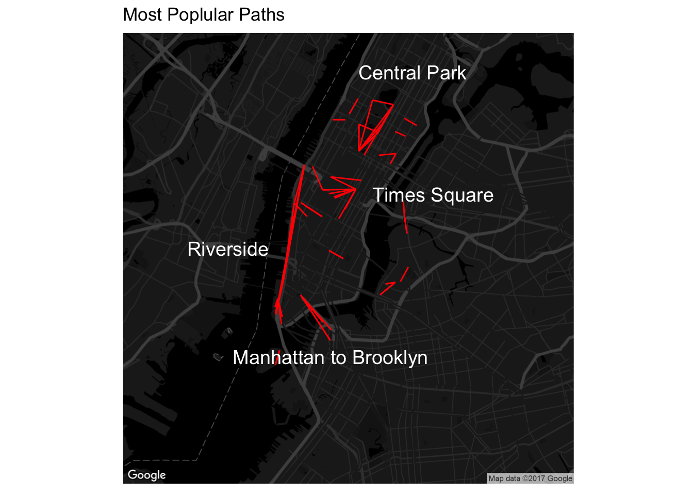

Citi Bike Usage in NYC
Seasonal Analysis
The usage of bicycle is affected by weather, temperature and season. The first part we will explore the relationship between season and Citi Bike.

Clearly, there are less Citi Bike rides during November to March, which are winter months in New York City. By that we can conclude cold weather will decrese the usage of Citi Bike.

We can see from this picture that most of Citi Bike user subscribed the annual membership.
Also, the number of memberships will also be affected by season(mainly temperature). Since people are not willing to use bikes during winter months, the total number of memberships decreases during the winter months.
The following plot shows the most frequent station to station trips in NYC.

We can see most frequent paths are located around Central Park, Times Square, Riverside, and Connection between Manhattan and Brooklyn area.
Trips Distribution Over The 4 Quarters and Weekday
Next we tried to explore patterns in the trips for various neighborhoods. For this we used the data for the year 2016 as we believe it would lead to most stable patterns. We aggregated all the trips that began or ended on a particular day in a particular neighborhood and tried to find out patterns in those trips
The following patterns emerged out of the exercise:
On weekends number of trips start increasing around 10:00 peaks around and go down around 6:00. The major neighborhoods are midtown and downtown Manhattan and parks. People got to parks or go for a leisurely bike ride around the city.
On weekdays an interesting pattern emerges for the subscribers. There are two peaks. One peak is around 8 and another around 5. This is when most people go to and return from work. For some neighborhoods the peak at 8 is larger than the peak at 5 which means that some neighborhoods have more offices than residential buildings. Even though the patterns for different weekdays follow a similar trend. The magnitude is the largest on wednesdays. Which is interesting. We’re still looking for explanations for this trend. The pattern for customers is similar to what we see for the weekends most of them go out b/w 10 and 6.
Most interesting are the patterns around parks. Central Park for example:
On weekdays we find peaks for subscribers at 6 and 7. Which means that most subscribers are members of the working community who go to the parks to workout before and after work. The customers as usual sleep in and go to the parks b/w 10 and 6 pm. This actually lends a lot of credibility to our hypothesis that customers are mostly tourists.
on weekends the patterns for customers and subscribers is similar. usually the number of trips for customers is less than the number of trips for subscribers. This is not true for parks. Parks have a higher magnitude of customer trips than subscriber trips.